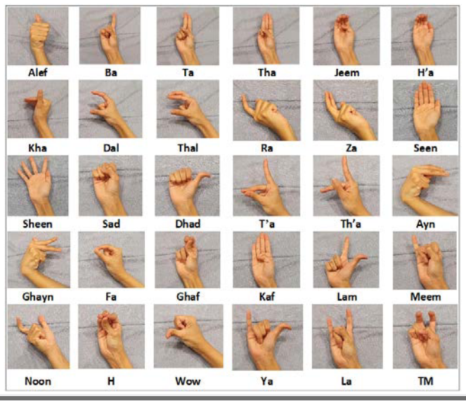

yolov5
est une famille d'architectures et de modèles de détection d'objets ( yolov5(s/m/l/x) ) qui représente la recherche open source Ultralytics sur l'avenir de la vision par ordinateur, dans cette application, nous utilisons la version yolov5s pour sa vitesse, la taille de fichier de poids, implémenté dans PyTorch qui facilite la manipulation du modèle


Arab Sign Language
est une famille de langues des signes répandues dans tout le Moyen-Orient arabe. Contrairement à l'arabe parlé, les langues des signes arabes (ArSL) ne sont pas diglossiques. Cela signifie qu'il existe une version d'une langue des signes arabe utilisée par une communauté, plutôt que deux versions